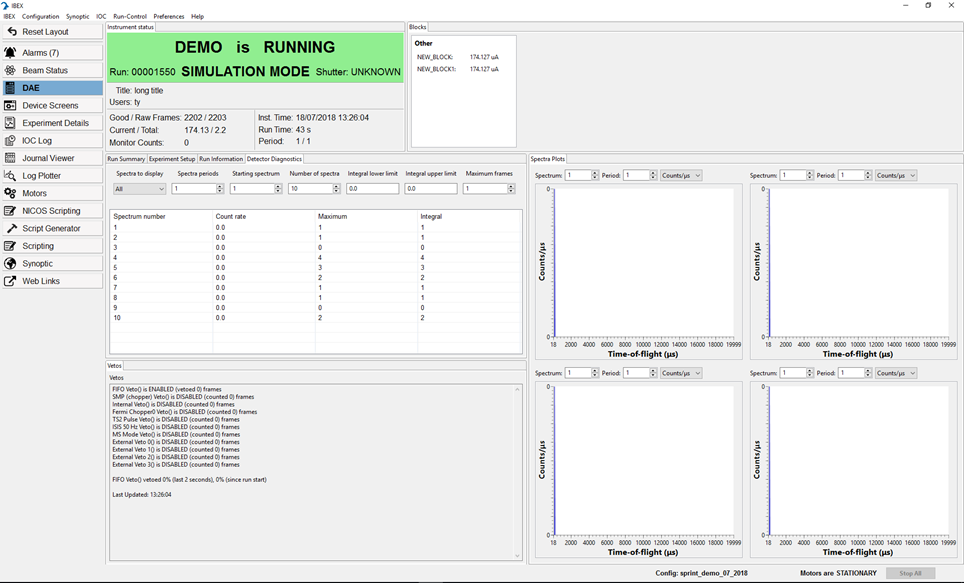
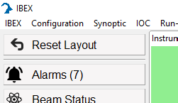

Views
The main area of the IBEX GUI is reserved for displaying different types of view. Each displays a different aspect of the instrument.
Movable Panels
You can resize panels and move panels around inside of a view in IBEX.
{kind=link}
If you want to return to the default panel arrangement within a view, click on the Reset Layout button in the top left-hand corner
to reset the layout.
Note: If you switch views then the layout is kept in the previous view. Each view will keep its panel layout until IBEX client is closed or the Reset Layout button is pressed.
View Selector
The View Selector, situated on the left-hand side of the IBEX GUI, is a column of buttons. Change a to a view by clicking on the associated button. The view button highlighted in blue indicates the currently selected view.
Which views are visible to select is dependent on the settings which can be changed in: Main Toolbar -> Preferences -> Select visible perspectives
Views
Reset Layout
The Reset Layout View resets the layout of the windows back to their default position. If the layout has been changed, then this button becomes highlighted in red.
Alarms
The Alarms View displays the alarm state of all devices attached to the instrument control PC. It will flash red if there are any alarms. Also, the number of alarms will appear in brackets on the button. If this view is selected and there are alarms, the button will stay highlighted in red if there are alarms.
Beam Status
The Beam Status View displays the status of the synchrotron, TS1 and TS2 beams. It also displays MCR news. To add/log a PV to the configuration, right-click to the text box next to the PV name.
DAE
The DAE View allows you to set up and control the DAE. See Manage the DAE for further details.
Device Screens
The Device Screens view allows you to set up, control and view OPIs for different devices.
Experiment Details
The Experiment Details View allows you to look up details of your current experiment using the RB number. See Experiment Details for further details.
IOC Log
The IOC Log View displays a log of all the messages sent by the IOCs which control the devices attached to the instrument control PC.
Journal Viewer
The Journal Viewer displays information about previous runs made on the instrument.
Log Plotter
The Log Plotter View allows you to plot a strip-chart graph of any block or process variable. See Plot a graph of a block for more details. If the buttons to add PVs to Log Plotter don’t work, it is probably because Log Plotter perspective is disabled. It can be re-enabled from settings at the top bar.
Motors
The Motors View displays the status of all motors connected to the instrument control PC. You can also control all motors from this view. The Motors View is most useful for instruments with large numbers of motors.
Reflectometry
The Reflectometry View is available to reflectometers that combines all the components needing to run most experiments for a reflectometer in one place. Typically this view replaces the scripting view.
Script Server
The Script Server View displays the current script being run, the queue of scripts to be run on the Script server and the output of any scripts. See Script Server for more details.
Scripting
Selecting the Scripting View displays a Python console, allowing you to load and execute Python or genie_python scripts. Note: Scripts running in the Scripting View are independent of scripts running on the Script Server.
Synoptic
The Synoptic View provides a schematic overview of your instrument. It is a convenient way to navigate to any device attached to the instrument control PC. The Create and Manage Synoptics page provide more detail on how to create and manage synoptics.
Web Links
The Web Links View is a collection of convenient web links.